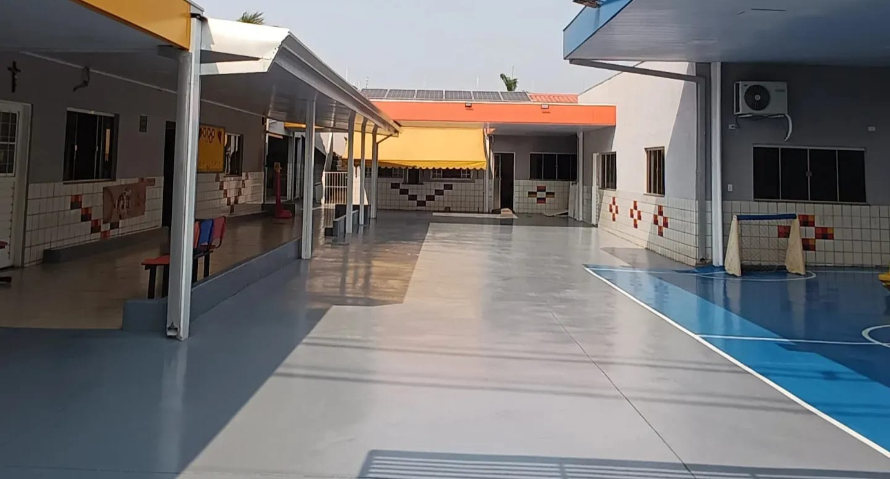
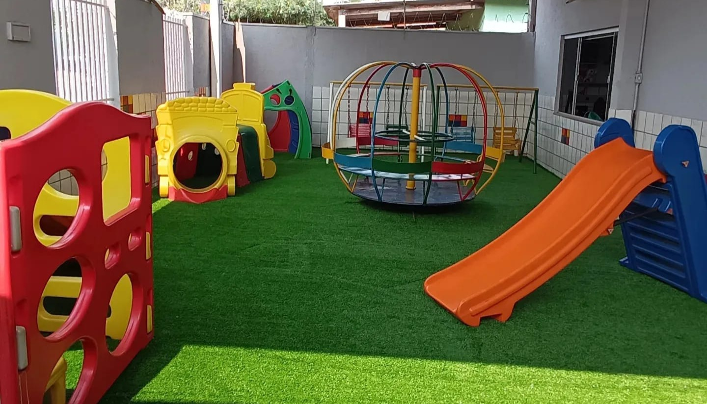
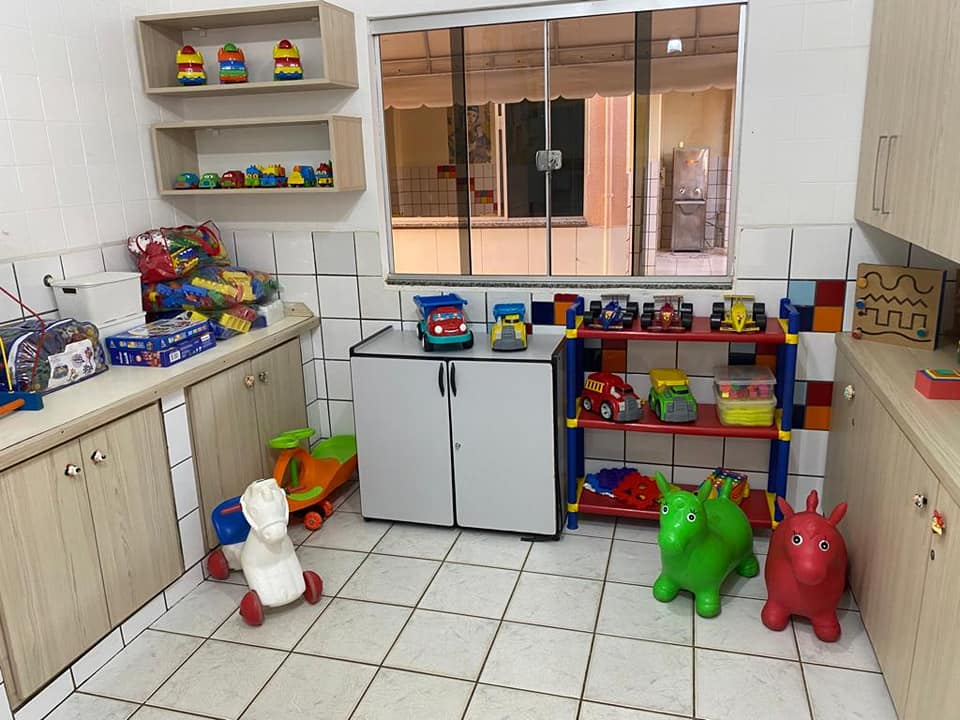
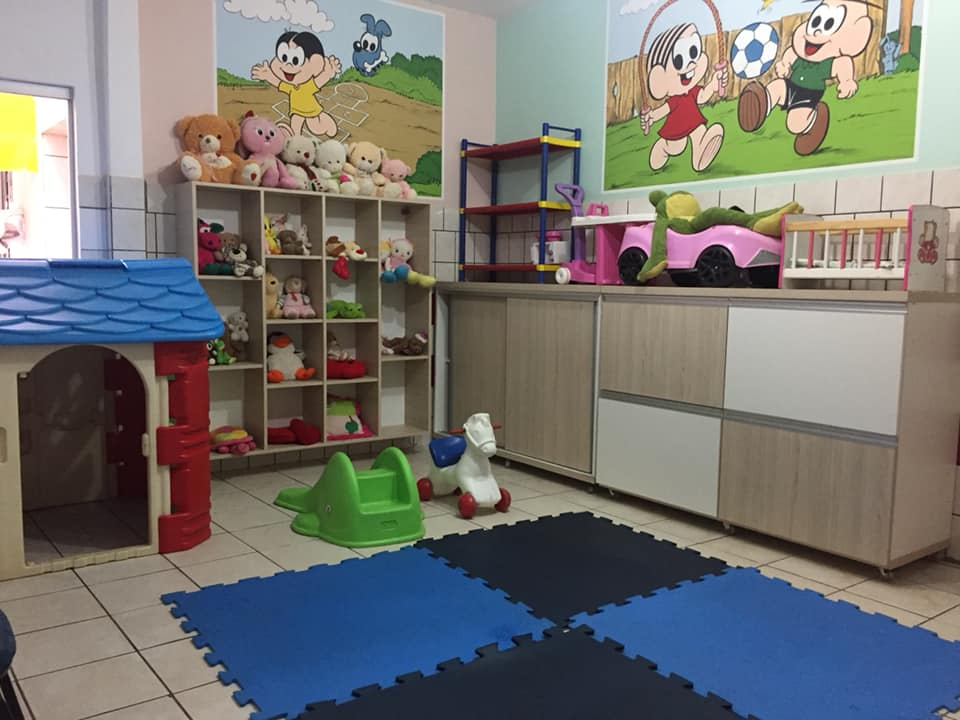
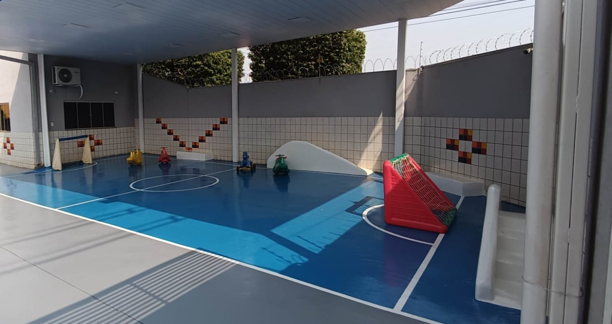

Um pouco de nossa história
Com mais de 40 anos de atuação na Educação Infantil, a Creche Perpétuo Socorro construiu uma trajetória marcada por dedicação, responsabilidade e amor ao ensinar.

Parquinho
Nossa creche conta com um parquinho com brinquedos fixos, planejado para garantir diversão, segurança e estímulo ao desenvolvimento motor, além de uma quadra que possibilita atividades físicas e recreativas.

Dispomos de salas de brinquedos organizadas e acolhedoras, onde as crianças aprendem brincando, explorando a criatividade, a imaginação e a convivência com os colegas.


Trabalhamos com um projeto pedagógico de qualidade, respeitando cada fase da infância e promovendo experiências que contribuem para o crescimento cognitivo, social e emocional.
patio
O pátio da Creche Perpétuo Socorro é um espaço amplo, seguro e acolhedor, pensado para momentos de convivência, recreação e atividades ao ar livre. É nele que as crianças interagem, brincam livremente e fortalecem laços!
